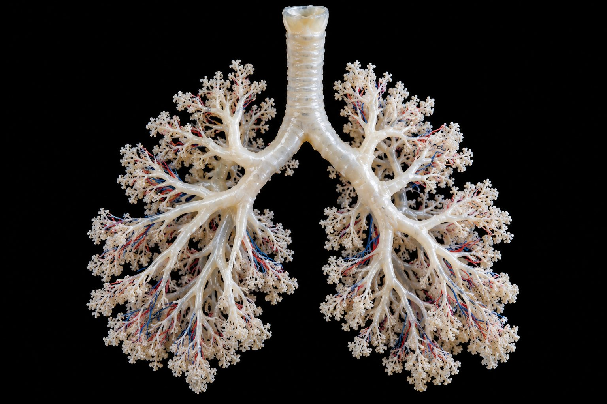
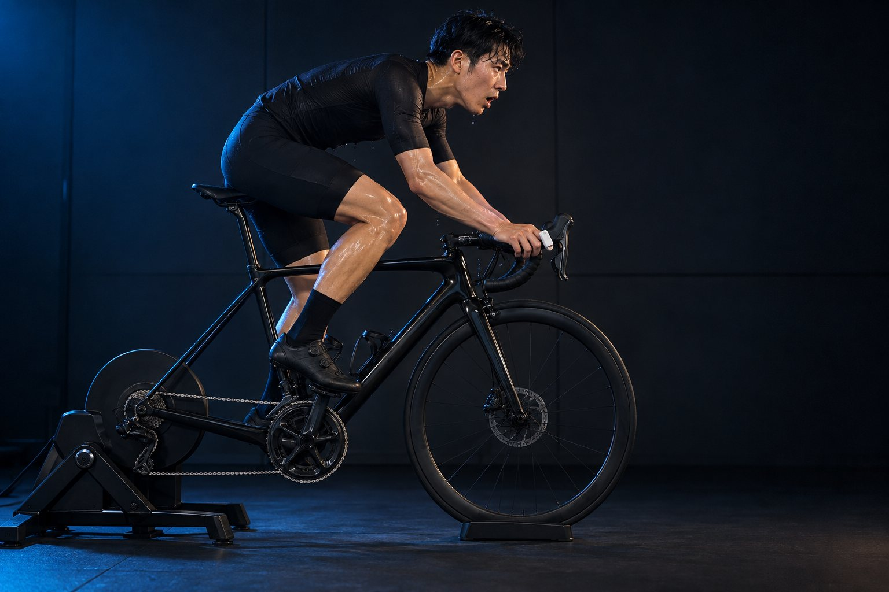

한 번 숨 쉴 때마다 이만큼은 폐포에 닿지 못한다.
횡격막 + 외늑간근
횡격막이 수축해 아래로 내려가면 흉강의 수직 크기↑ → 흉강 내압↓ → 공기가 들어온다.
근육 없음 — 수동
늘어난 폐와 흉벽이 탄성으로 되돌아간다.
더 깊게, 더 세게
흡기: 흉쇄유돌근·사각근 추가
호기: 복횡근·복직근·내외복사근·내늑간근이 능동 수축
| 1회 호흡량 | TV | 0.5 L |
| 흡기 예비용적 | IRV | 3.1 |
| 호기 예비용적 | ERV | 1.2 |
| 잔기량 | RV | 1.2 |
| 폐활량 = IRV+TV+ERV | VC | 4.8 |
| 총폐용량 = VC+RV | TLC | 6.0 |
| 기능적 잔기량 = ERV+RV | FRC | 2.4 |
| 흡기용량 = TV+IRV | IC | 3.6 |
| 1회 호흡량 | 호흡수 | 분당 환기량 | 폐포 환기량 | |
|---|---|---|---|---|
| 얕고 빠르게 | 250 mL | 32 | 8.0 L | 13.2 L |
| 보통 | 400 mL | 20 | 8.0 L | 25.0 L |
| 깊고 느리게 | 800 mL | 10 | 8.0 L | 36.5 L |
PO₂ 159
760 × 20.93%PO₂ 100~105
PCO₂ 40
PO₂ ~100
PCO₂ 40
PO₂ 40 · 운동 시 <20
PCO₂ 46↑
PO₂ 40
PCO₂ 46
+ 폐 윗부분 모세혈관 동원으로 면적↑
| 학생 | 1회 호흡량(mL) | 호흡수(회/분) |
|---|---|---|
| 가 | 350 | 24 |
| 나 | 600 | 14 |
| 다 | 700 | 12 |
다음은 점증부하 운동 검사 결과에 대한 설명이다.
- ㉠ 젖산역치 이후 혈중 젖산이 늘면 중탄산 완충으로 CO₂가 더 생겨 환기량이 늘어난다.
- ㉡ 호흡성 보상점에서는 VE/VCO₂가 오르기 시작한다.
- ㉢ 지구성 훈련 후에는 젖산역치가 더 낮은 운동 강도에서 나타난다.
- ㉣ OBLA는 혈중 젖산 농도가 2 mmol/L에 이르는 시점이다.

| RER | 주 연료 | O₂ 1 L당 |
|---|---|---|
| 0.70 | 지방 | 4.69 kcal |
| 0.85 | 지방 ≈ 탄수화물 | 4.86 kcal |
| 1.00 | 탄수화물 | 5.05 kcal |
CO₂ 생성량 2.7 L/분
○ 항정상태 30분 운동: 산소섭취량 2.0 L/분, CO₂ 생성량 1.7 L/분
○ 비단백 RER 0.85 → 산소 1 L당 4.86 kcal
- ⓐ 고강도 운동일수록 운동 초기 산소결핍이 감소한다.
- ⓑ 고강도 운동 뒤에는 EPOC 면적이 증가한다.
- ⓒ EPOC 구간에서 크레아틴인산(PCr)이 분해된다.

화학수용기
중추(연수): PCO₂·H⁺↑에 반응 — 평상시 주인공
말초(경동맥체): PO₂↓에 특히 반응 — 고지대의 핵심
대부분 중탄산 이온
중탄산 약 70% · 카르바미노 약 20% · 용해 약 7~10%
적혈구 탄산탈수효소 → HCO₃⁻는 혈장으로, Cl⁻는 적혈구로 = 염화물 이동
압력이 낮다
즉시: 과환기 → 호흡성 알칼리증
며칠: 신장 HCO₃⁻ 배설 · 2,3-BPG↑
몇 주: EPO → 적혈구↑
- 폐포 환기량에서 사강 150 mL를 안 뺌
- 안정 시 호기에 근육이 쓰인다고 씀 — 수동
- 해리곡선 우측이동 = pH 감소 (증가 아님)
- 픽의 확산 법칙(호흡막)과 픽 원리(VO₂ = Q × 산소차) 혼동
- 확산 증가 이유에 '분압차'를 안 씀
- RER 0.7 = 지방, 1.0 = 탄수화물 반대로
- RER > 1.0을 '탄수화물만 써서'로 — 비대사성 CO₂
- 고강도일수록 산소결핍 증가
- EPOC 동안 PCr은 재합성
- 훈련 후 젖산역치는 더 높은 강도로
사강 150 mL
폐포 환기 = (VT − 150) × f
안정 호기는 수동, 노력성 호기에 복횡근
VC = IRV + TV + ERV
분압차
확산 ∝ 면적 × 분압차 ÷ 두께
우측이동: 온도↑ PCO₂↑ pH↓ 2,3-BPG↑
CO₂는 중탄산 약 70%
신경 → 체액
급증은 신경성, 완만은 체액성
중추: PCO₂·H⁺ / 말초: PO₂↓
VT1 ≈ 젖산역치, VT2 ≈ OBLA
RER = VCO₂ ÷ VO₂
0.7 지방 · 1.0 탄수화물
> 1.0 = 중탄산 완충 CO₂
열량 = kcal/L × VO₂ × 시간
산소결핍 · EPOC
고강도 → 산소결핍↑ · EPOC↑
EPOC: PCr 재합성, 젖산 제거
적극적 회복 → 젖산 산화↑
아직 안 나온 것
화학수용기 · CO₂ 운반·염화물 이동
고지대 과환기·EPO
운동유발 저산소혈증